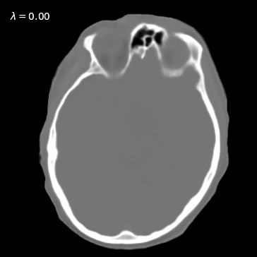
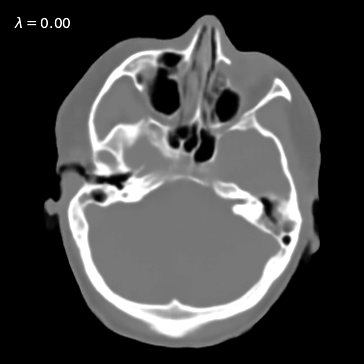
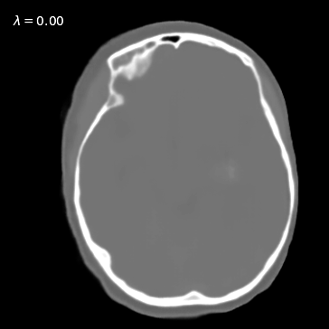

We visualize the results of generated MSL images with different lambda.
The MSL images with different λ afford variable hybridization of CT and MRI and allow us to take advantage of useful properties of the two modalities.



We also show the results of MSL imaging with local contrast tuning.
The contrast of imaging content can be tuned to highlight the soft tissue or bony structure by spatially modulating lambda.